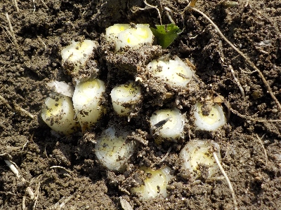

更新日 : 2026/03/01

以前から植えている長ネギです。本来なら掘り起こしで抜くんですが、今回はハサミで切って収穫することにしました。
いつもだったら根っこごと持って帰って、料理するときに根本を切り取って保存します。切り取ったのが溜まったらまた畑に植える作業をしていました。
畑に植えなおすのが面倒なので、そのまま放置で育てることにしました。株が密ですが、ネギを刻んで使うので細い方が好都合なので気にしません。
今年は玉ねぎが大きくなってないので収穫があまり期待できません。代わりに長ネギを増やそうと思いました。食べながら倍増以上を目指します。
沢山食べる予定です。玉ねぎの代用になるかな。
【おいしいものを食べよう。】【たくさん寝よう。】
【ソロ活をしよう!】【季節感のあることをしよう。】【動画視聴はほどほどに。】【当サイトの全てのコンテンツは無断転載禁止です。】